24. Jobs
A job is an instance of automation controller launching an Ansible playbook against an inventory of hosts. Project syncs, inventory syncs, ad hoc commands, workflows and management jobs are listed as jobs too.
Open Automation Execution > Jobs. The list shows the jobs you can see, with their ID, name, status, type and when they started and finished, and can be searched and filtered. Its columns can be chosen with the column management button; more are available, such as the launcher, the inventory, the project, the execution environment and the labels.
By default, the list is sorted by finish time, newest first. Jobs that have not finished yet (new, pending, waiting, or running) appear at the top. Click a column header to sort by that column instead, and click it again to reverse the order.
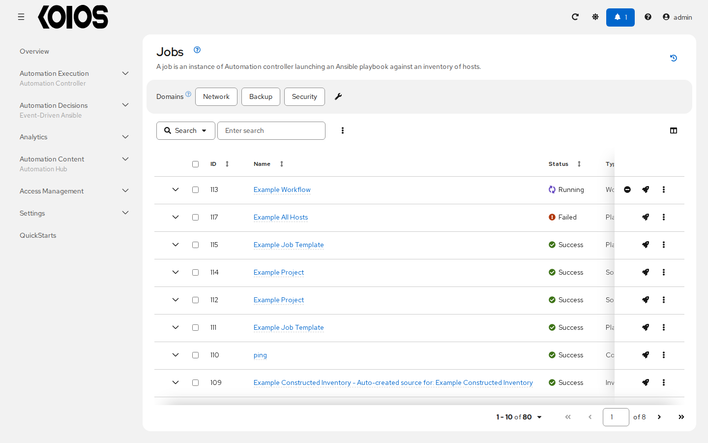
Expand a row with the arrow next to it to see more details of the job.
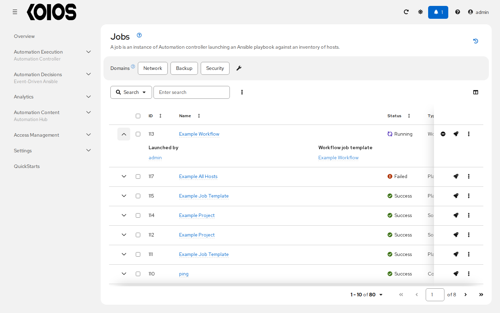
Each row has a relaunch action (rocket icon) and, in its menu, Cancel job for a running job and Delete job. Select several jobs to cancel or delete them with Cancel jobs and Delete jobs in the toolbar menu. Relaunch is available, when you have the permission to start the job again, for playbook runs, ad hoc commands, workflow jobs, project syncs and inventory syncs; management jobs are relaunched from their template.
When a job is launched or relaunched, its Output tab opens as the job runs. Clicking a job in the list opens it too. While the job runs, Follow keeps the newest output in view and Unfollow stops it.
The output can be filtered with the search toolbar: choose Search to look for text in the events, Event to show only some types of events (such as failures, host retries, skipped items or changes), Stdout to match the text of the output, or other fields of the job events.
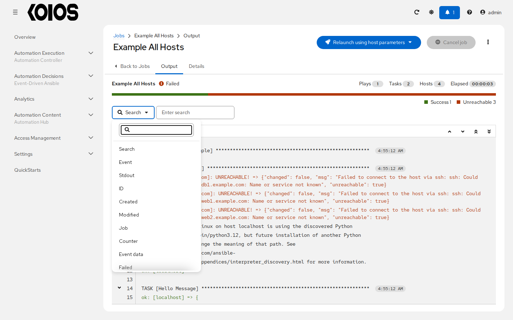
For details about filtering, refer to the Search chapter.
24.1. Inventory Sync Jobs
When an inventory sync is executed, the full results automatically display in the Output tab. This shows the same information you would see if you ran it through the Ansible command line, and can be useful for debugging. Increase the Verbosity of the inventory source to see more detail. The ANSIBLE_DISPLAY_ARGS_TO_STDOUT is set to False by default for all playbook runs. This matches Ansible’s default behavior. This does not display task arguments in task headers in the Job Detail interface to avoid leaking certain sensitive module parameters to stdout. If you wish to restore the prior behavior (despite the security implications), you can set ANSIBLE_DISPLAY_ARGS_TO_STDOUT to True via the AWX_TASK_ENV configuration setting. For more details, refer to the ANSIBLE_DISPLAY_ARGS_TO_STDOUT.
The actions at the top of the job relaunch it (Relaunch job) or cancel it while it runs (Cancel job); the menu next to them downloads the output (Download output) or deletes the job (Delete job).
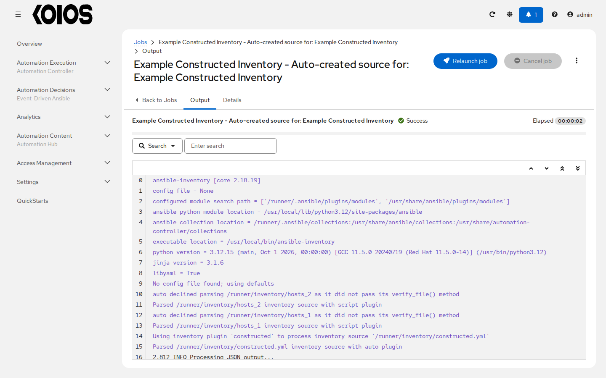
Note
An inventory update can be performed while a related job is running. In cases where you have a big project (around 10 GB), disk space on /tmp may be an issue.
24.1.1. Inventory sync details
Open the Details tab to see details about the job execution.
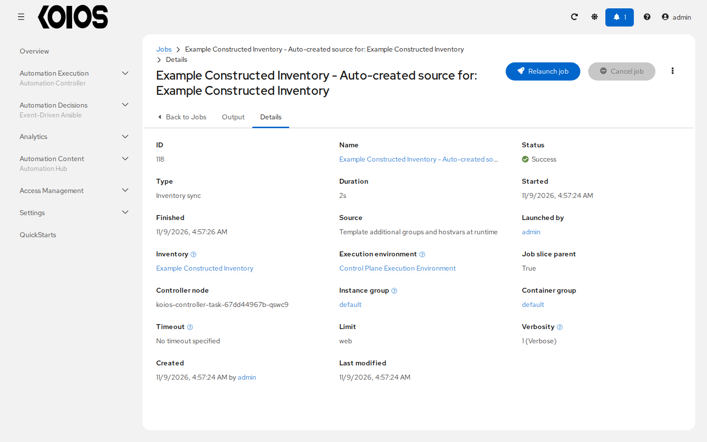
Notable details of the job executed are:
Status: Can be any of the following:
Pending - The inventory sync has been created, but not queued or started yet. Any job, not just inventory source syncs, will stay in pending until it’s actually ready to be run by the system. Reasons for inventory source syncs not being ready include dependencies that are currently running (all dependencies must be completed before the next step can execute), or there is not enough capacity to run in the locations it is configured to.
Waiting - The inventory sync is in the queue waiting to be executed.
Running - The inventory sync is currently in progress.
Success - The inventory sync job succeeded.
Failed - The inventory sync job failed.
Error - The inventory sync could not run.
Canceled - The inventory sync was canceled.
Source: The type of inventory source.
Inventory: The inventory that was updated.
Execution environment: The execution environment used.
Instance group and Container group: Where the job ran.
Limit and Verbosity: The values used by the sync.
Click the links to open the corresponding inventory, execution environment, instance group and other objects.
24.2. Project Sync Jobs
When a project sync (source control update) is executed, the full results automatically display in the Output tab. This shows the same information you would see if you ran it through the Ansible command line, and can be useful for debugging.
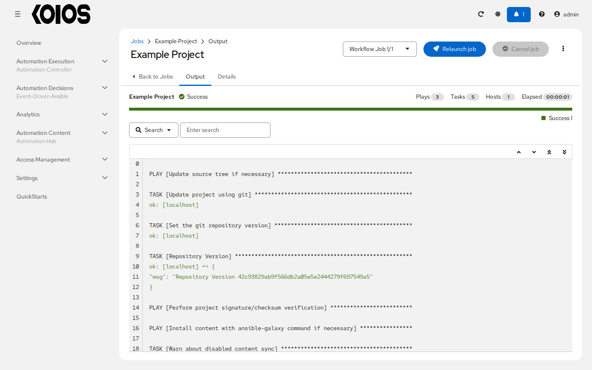
24.2.1. Project sync details
Open the Details tab to see details about the job execution and its associated project.
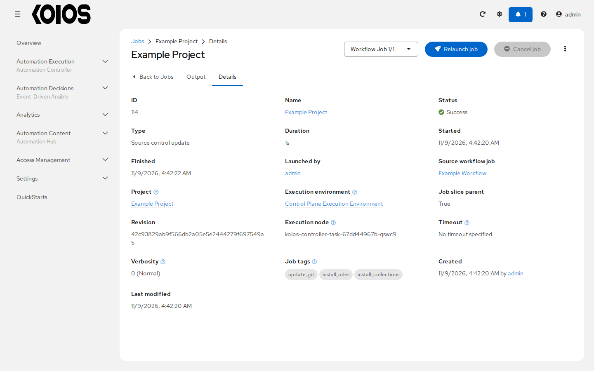
Notable details of the job executed are:
Status: Pending, Waiting, Running, Success, Failed, Error or Canceled, as for the other jobs.
Type: Project syncs display Source control update.
Project: The name of the project.
Revision: The revision of the project that this job checked out.
Execution environment: The execution environment used to run this job.
Execution node: The node on which the job ran.
Source workflow job: The workflow job that launched it, if any.
Job tags: The parts of the project update that ran, such as
update_git,install_rolesandinstall_collections.
Click the links to open the corresponding project, workflow job and other objects.
24.3. Playbook Run Jobs
When a playbook is executed, the full results automatically display in the Output tab. This shows the same information you would see if you ran it through the Ansible command line, and can be useful for debugging.
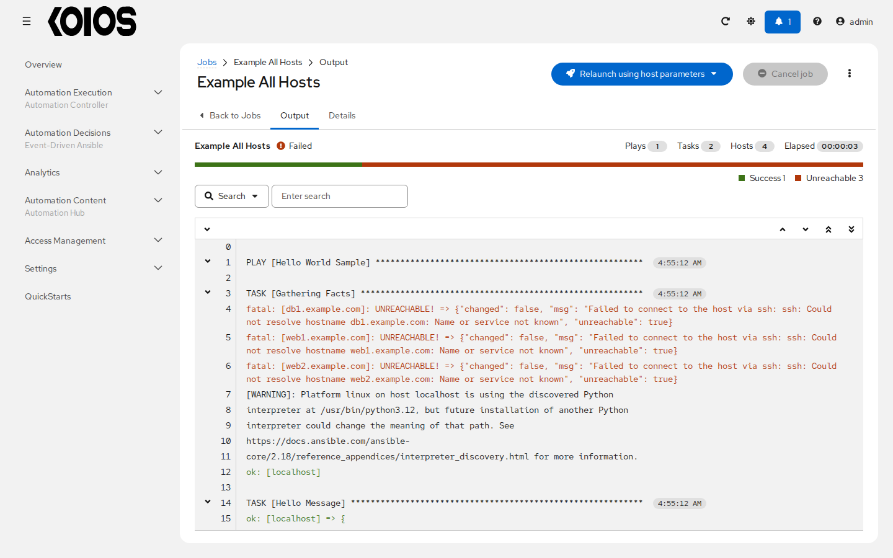
The summary at the top of the output shows a tally of the job:
the number of plays in the Plays field
the number of tasks in the Tasks field
the number of hosts in the Hosts field
the time it took to run in the Elapsed field
The host status bar under it shows the hosts by status (for example Success and Unreachable), and its legend gives the number of hosts with each status.
The output for a playbook job is also accessible from the Jobs tab of its job template.
24.3.1. Relaunch a playbook run
For a failed playbook run, Relaunch using host parameters offers Relaunch on all hosts or Relaunch on failed hosts; for other jobs, Relaunch job relaunches it. The job is relaunched with the values given at its launch re-applied to the current job template (see Job Templates), so if the inventory or the limit of the template changed, the hosts can change too: Relaunch on all hosts does not keep a list of the original hosts. Relaunch on failed hosts sets the limit to the hosts that failed or were unreachable in the original job; it is refused if that job had none. If the credentials ask for passwords, they are requested again.
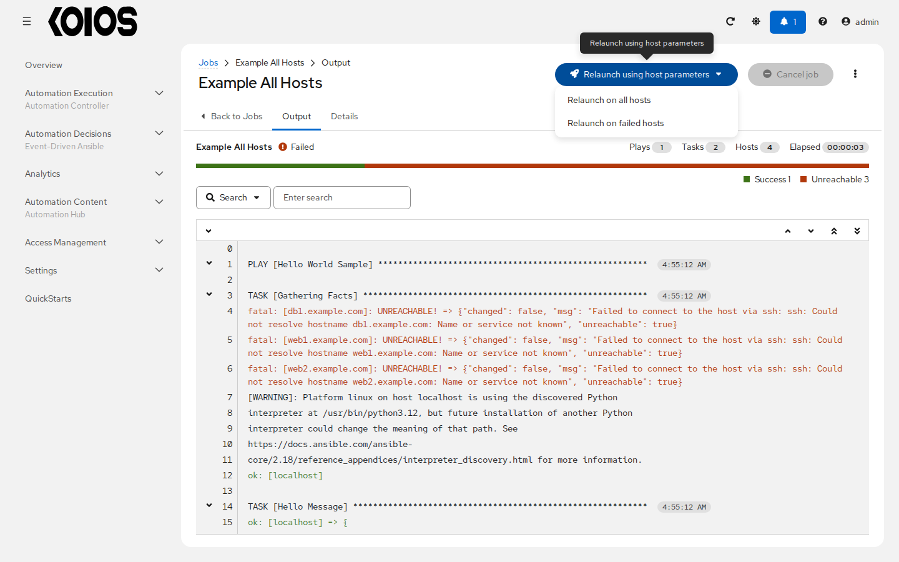
24.3.2. Search
Use the search toolbar to look up specific events, hostnames, and their statuses. The hosts of a task can have one of these statuses:
OK: the playbook task returned “Ok”.
Changed: the playbook task actually executed. Since Ansible tasks should be written to be idempotent, tasks may exit successfully without executing anything on the host. In these cases, the task would return Ok, but not Changed.
Failed: the task failed. Further playbook execution was stopped for this host.
Unreachable: the host was unreachable from the network or had another fatal error associated with it.
Skipped: the playbook task was skipped because no change was necessary for the host to reach the target state.
Rescued: this shows the tasks that failed and then executes a rescue section.
Ignored: this shows the tasks that failed and have
ignore_errors: yesconfigured.
These statuses also display at the end of the output of a playbook run, in the play recap.
For more details about filtering, refer to the Search chapter.
The output displays all the events that occur on a particular job, expanded. Use the arrow next to each play or task to collapse or expand its lines, or the arrow at the top left of the output to collapse or expand all of them. The buttons at the top right of the output scroll up and down and jump to the beginning or the end.
Things to note when viewing the output:
Each displayed line has a line number, and each play and task its start time.
An expand/collapse icon is at the start of any play or task after the play or task has completed.
Very large outputs are loaded as you scroll; use the search to go to specific events.
Click a line of a host event in the output to open the Host Details window for the host affected by that event.
24.3.3. Host Details
The Host Details window shows information about the host affected by the selected event and its associated play and task:
the Host
the Status
the Play
the Task
if applicable, the Ansible Module for the task
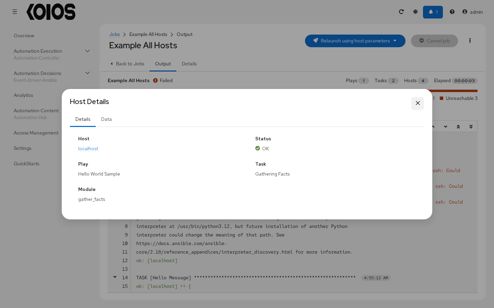
The Data tab shows the result of the module (res in the event data) in JSON. When the event has them, the Output and Standard Error tabs show its standard output and standard error.
24.3.4. Playbook run details
Open the Details tab to see details about the job execution.
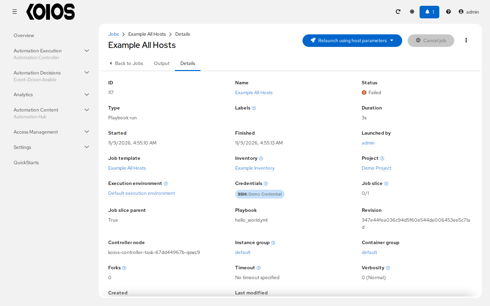
Notable details of the job executed are:
Status: Can be any of the following:
Pending - The playbook run has been created, but not queued or started yet. Any job, not just playbook runs, will stay in pending until it is actually ready to be run by the system. Reasons for playbook runs not being ready include dependencies that are currently running (all dependencies must be completed before the next step can execute), or there is not enough capacity to run in the locations it is configured to.
Waiting - The playbook run is in the queue waiting to be executed.
Running - The playbook run is currently in progress.
Success - The playbook run succeeded.
Failed - The playbook run failed.
Error - The playbook run could not run.
Canceled - The playbook run was canceled.
Job template: The name of the job template from which this job was launched.
Inventory: The inventory selected to run this job against.
Project: The name of the project associated with the launched job.
Playbook and Revision: The playbook used and the revision of the project.
Execution environment: The name of the execution environment used in this job.
Credentials: The credential(s) used in this job.
Instance group and Container group: Where the job ran.
Extra variables: The extra variables of the job, from the job template, the survey and the launch prompts.
Click the links to open the corresponding job template, inventory, project and other objects.
24.4. Automation controller Capacity Determination and Job Impact
This section describes how to determine capacity for instance groups and its impact to your jobs. For container groups, see Container capacity limits in the Administration Guide.
Automation controller capacity system determines how many jobs can run on an instance given the amount of resources available to the instance and the size of the jobs that are running (referred to as Impact). The algorithm used to determine this is based entirely on two things:
How much memory is available to the system (
mem_capacity)How much CPU is available to the system (
cpu_capacity)
Capacity also impacts Instance Groups. Since Groups are made up of instances, likewise, instances can be assigned to multiple groups. This means that impact to one instance can potentially affect the overall capacity of other Groups.
Instance Groups (not instances themselves) can be assigned to be used by jobs at various levels (see Clustering). When the Task Manager is preparing its graph to determine which group a job will run on, it will commit the capacity of an Instance Group to a job that hasn’t or isn’t ready to start yet.
Finally, in smaller configurations, if only one instance is available for a job to run, the Task Manager will allow that job to run on the instance even if it pushes the instance over capacity. This guarantees that jobs themselves won’t get stuck as a result of an under-provisioned system.
Therefore, Capacity and Impact is not a zero-sum system relative to jobs and instances/Instance Groups.
For information on sliced jobs and their impact to capacity, see Job slice execution behavior.
24.4.1. Resource determination for capacity algorithm
The capacity algorithms are defined in order to determine how many forks a system is capable of running simultaneously. This controls how many systems Ansible itself will communicate with simultaneously. Increasing the number of forks an automation controller system is running will, in general, allow jobs to run faster by performing more work in parallel. The trade-off is that this will increase the load on the system, which could cause work to slow down overall.
Automation controller can operate in two modes when determining capacity. mem_capacity (the default) will allow you to over-commit CPU resources while protecting the system from running out of memory. If most of your work is not CPU-bound, then selecting this mode will maximize the number of forks.
24.4.1.1. Memory relative capacity
mem_capacity is calculated relative to the amount of memory needed per fork, about 100MB. The
formula is:
mem / mem_per_fork
As an example:
4096 / 100 == ~40
Therefore, an instance with 4GB of memory would be capable of running 40 forks. On a virtual machine
installation, automation controller reserves 2GB for its other services first; Koios Automation
Platform runs on Kubernetes, where those services have their own containers and memory, so nothing
is reserved. For control nodes, SYSTEM_TASK_ABS_MEM overrides the memory that is detected. The value
mem_per_fork can be controlled by setting the settings value (or environment variable)
SYSTEM_TASK_FORKS_MEM, which defaults to 100.
24.4.1.2. CPU relative capacity
Often, Ansible workloads can be fairly CPU-bound. In these cases, sometimes reducing the simultaneous workload allows more tasks to run faster and reduces the average time-to-completion of those jobs.
Just as the mem_capacity algorithm uses the amount of memory need per fork, the cpu_capacity algorithm looks at the amount of CPU resources is needed per fork. The baseline value for this is 4 forks per core. The algorithm formula for this is:
cpus * fork_per_cpu
For example, a 4-core system:
4 * 4 == 16
The value fork_per_cpu can be controlled by setting the settings value (or environment variable) SYSTEM_TASK_FORKS_CPU which defaults to 4.
24.4.2. Capacity job impacts
When selecting the capacity, it’s important to understand how each job type affects capacity.
It’s helpful to understand what forks mean to Ansible: https://www.ansible.com/blog/ansible-performance-tuning (see the section on “Know Your Forks”).
The default forks value for Ansible is 5. However, if automation controller knows that you’re running against fewer systems than that, then the actual concurrency value will be lower.
When a job is run, automation controller will add 1 to the number of forks selected to compensate for the Ansible parent process. So if you are running a playbook against 5 systems with a forks value of 5, then the actual forks value from the perspective of Job Impact will be 6.
24.4.2.1. Impact of job types in automation controller
Jobs and Ad-hoc jobs follow the above model, forks + 1. If you set a fork value on your job template, your job capacity value will be the minimum of the forks value supplied, and the number of hosts that you have, plus one. The plus one is to account for the parent Ansible process.
Instance capacity determines which jobs get assigned to any specific instance. Jobs and ad hoc commands use more capacity if they have a higher forks value.
Other job types have a fixed impact:
Inventory Updates: 1
Project Updates: 1
System Jobs: 5
If you don’t set a forks value on your job template, your job will use Ansible’s default forks value of five. Even though Ansible defaults to five forks, it will use fewer if your job has fewer than five hosts. In general, setting a forks value higher than what the system is capable of could cause trouble by running out of memory or over-committing CPU. So, the job template fork values that you use should fit on the system. If you have playbooks using 1000 forks but none of your systems individually has that much capacity, then your systems are undersized and at risk of performance or resource issues.
24.4.2.2. Selecting the right capacity
Selecting a capacity out of the CPU-bound or the memory-bound capacity limits is, in essence, selecting between the minimum or maximum number of forks. In the above examples, the CPU capacity would allow a maximum of 16 forks while the memory capacity would allow 20. For some systems, the disparity between these can be large and often times you may want to have a balance between these two.
The instance field capacity_adjustment allows you to select how much of one or the other you want to consider. It is represented as a value between 0.0 and 1.0. If set to a value of 1.0, then the largest value will be used. The above example involves memory capacity, so a value of 20 forks would be selected. If set to a value of 0.0 then the smallest value will be used. A value of 0.5 would be a 50/50 balance between the two algorithms which would be 18:
16 + (20 - 16) * 0.5 == 18
To view or edit the capacity in the user interface, open the Instances tab of the instance group and use the slider of each instance.

24.5. Job branch overriding
Projects specify the branch, tag, or reference to use from source control in the scm_branch field. In the project form this is the Source control branch/tag/commit field, next to Source control refspec:

Projects have the Allow branch override option. When checked, project admins can delegate branch selection to the job templates that use that project (requiring only project use_role).

24.5.1. Source tree copy behavior
Every job run has its own private data directory. This directory contains a copy of the project source tree for the given
scm_branch the job is running. Jobs are free to make changes to the project folder and make use of those changes while it is still running. This folder is temporary and is cleaned up at the end of the job run.
If Clean is checked, automation controller discards modified files in its local copy of the repository through use of the force parameter in its respective Ansible modules pertaining to git or Subversion.

24.5.2. Project revision behavior
Typically, during a project update, the revision of the default branch (specified in the Source control branch/tag/commit field of the project) is stored when updated, and jobs using that project will employ this revision. Providing a non-default branch (not a commit hash or tag) in a job, the newest revision is pulled from the source control remote immediately before the job starts. This revision is shown in the Revision field of the details of the job and of its respective project update.

Consequently, offline job runs are impossible for non-default branches. To be sure that a job is running a static version from source control, use tags or commit hashes. Project updates do not save the revision of all branches, only the project default branch.
The branch field is not validated, so the project must update to assure it is valid. If this field is provided or prompted for, the Playbook field of job templates will not be validated, and you will have to launch the job template in order to verify presence of the expected playbook.
24.5.3. Git Refspec
The Source control refspec field specifies which extra references the update should download from the remote. Examples are:
refs/*:refs/remotes/origin/*: fetches all references, including remotes of the remote
refs/pull/*:refs/remotes/origin/pull/*(GitHub-specific): fetches all refs for all pull requests
refs/pull/62/head:refs/remotes/origin/pull/62/head: fetches the ref for that one GitHub pull request
For large projects, you should consider performance impact when using the 1st or 2nd examples here.
The Source control refspec parameter affects the availability of the project branch, and can allow access to references not otherwise available. The examples above allow the user to supply a pull request as the branch, which would not be possible without the Source control refspec field.
The Ansible git module fetches refs/heads/* by default. This means that a project’s branches and tags (and commit hashes therein) can be used as the branch if Source control refspec is blank. The value specified in the Source control refspec field affects which branches can be used as overrides. Project updates (of any type) will perform an extra git fetch command to pull that refspec from the remote.
For example: You could set up a project that allows branch override with the 1st or 2nd refspec example –> Use this in a job template that prompts for the branch –> A client could launch the job template when a new pull request is created, providing the branch pull/N/head –> The job template would run against the provided GitHub pull request reference.
For more information on the Ansible git module, see https://docs.ansible.com/ansible/latest/collections/ansible/builtin/git_module.html.